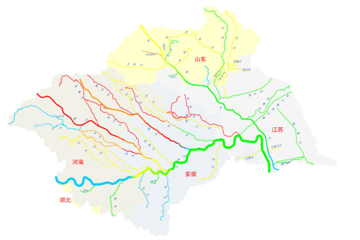

| 淮河采样计划 |
| 黄河采样计划 |
淮河采样计划
淮河位于中国东部，介于长江与黄河之间，是中国七大河之一。古称淮水，与长江、黄河和济水并称“四渎”，是中国七大江河之一。淮河发源于河南省南阳市桐柏县西部的桐柏山主峰太白顶西北侧河谷，干流流经河南、安徽、江苏三省，淮河干流可以分为上游、中游、下游三部分，全长1000公里，总落差200米。洪河口以上为上游，长360公里，地面落差178米，流域面积3.06万平方公里；洪河口以下至洪泽湖出口中渡为中游，长490公里，地面落差16米，中渡以上流域面积15.8万平方公里；中渡以下至三江营为下游入江水道，长150公里，三江营以上流域面积为16.46万平方公里。

淮河流域地跨河南、湖北、安徽、江苏和山东五省，流域面积约为27万平方公里，以废黄河为界，整个流域分成淮河和沂沭泗河两大水系，流域面积分别为19万平方公里和8万平方公里。
现征集志愿者参与淮河流域采样(项目ID：001)，时间为2017年8月至10月。
查看项目报告